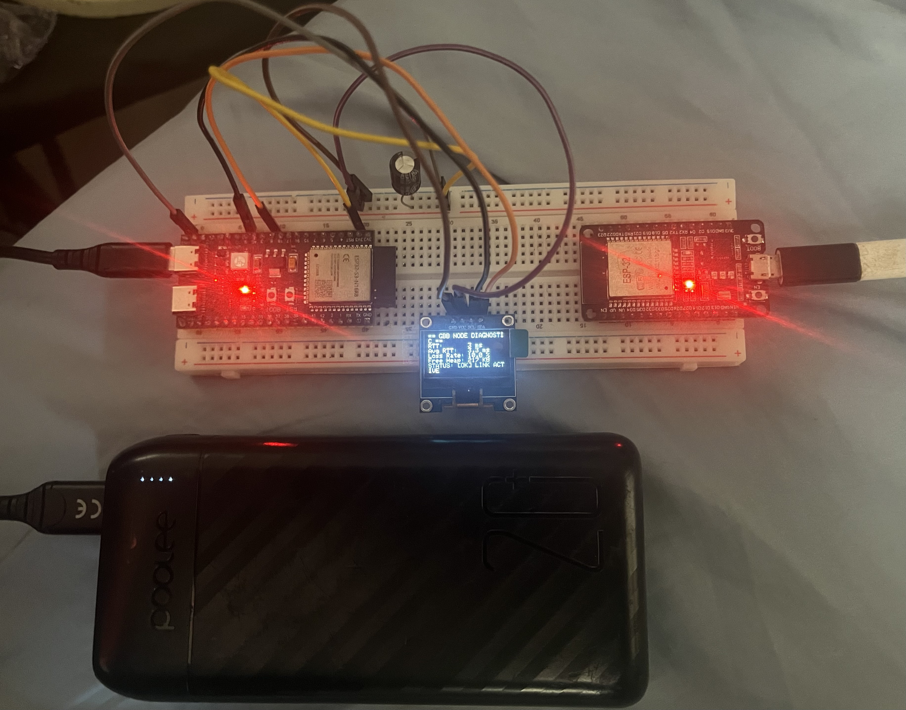

01. Project Overview
In high-availability enterprise environments and Tier-level data centers—such as those operated by national IT infrastructure providers—maintaining continuous power uptime is paramount. Any interruption in primary utility grids requires instantaneous, automated switching to backup generation or UPS systems.
This project implements a dual-node wireless power failover simulator. An ESP32-S3 acts as the primary grid monitor equipped with local HMI display feedback, while an ESP32-C3 acts as the actuator node driving a physical relay module. When a grid dropout is simulated, the system communicates wirelessly via low-latency ESP-NOW protocol to trip the failover circuit instantly.

Figure 1: Dual-Node ESP32-S3 & ESP32-C3 Hardware Assembly
02. System Architecture & Hardware Pinouts
Monitor Node (ESP32-S3)
Monitors simulated mains input via GPIO 4 (internal pull-up). Drives a 0.96" I2C OLED display (SDA: GPIO 8, SCL: GPIO 9) to render real-time grid status locally.
Actuator Node (ESP32-C3)
A RISC-V microcontroller listening via wireless ESP-NOW. Automatically drives a 1-channel 5V relay module connected to GPIO 4 upon receiving a grid fault packet.
Wireless Protocol (ESP-NOW)
Establishes a direct peer-to-peer MAC-to-MAC connection between the S3 and C3 nodes, bypassing slow router association for sub-millisecond failover signaling.
Power Isolation
Maintains a shared common ground across nodes while utilizing isolated power rails for relay switching to prevent transient voltage spikes and brownouts.
03. Failover Logic
The monitor node polls the digital input pin continuously. When grounded, it packages a boolean state change into an ESP-NOW broadcast payload. The actuator node receives this packet asynchronously via interrupt callbacks and toggles the relay state to simulate backup generator engagement.
04. Software & Core Stack
Written in C++ for the Arduino IDE, utilizing modern ESP32 board support packages and display libraries.
- Adafruit GFX & SSD1306 driver integration.
- Modern ESP32 core callback signature support (
esp_now_recv_info). - Event-driven actuator state machine.
05. Engineering Challenges & Solutions
Modern ESP32 Core API Compatibility
The Problem: Upgrading to newer Arduino ESP32 core packages caused compilation errors due to strict function pointer signature changes in the ESP-NOW receive callback function.
The Solution
Refactored the actuator callback signature to accept const esp_now_recv_info *info as its first parameter instead of a raw MAC address array, successfully aligning with modern ESP-IDF standards.
Simulating Clean Grid Dropouts
The Problem: Preventing floating pin voltage states from triggering false positive power failure alerts on the monitoring node during breadboard prototyping.
The Solution
Utilized internal pull-up resistor configurations (INPUT_PULLUP) on GPIO 4 so the pin defaults securely to a HIGH state, requiring a direct manual connection to GND to trigger a simulated blackout event safely.
06. Firmware Source Code
The complete firmware for both the Primary Power Monitor Node (S3) and the Failover Actuator Node (C3) is organized cleanly in the repository's dedicated firmware directory.